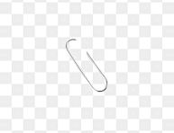
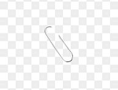

Welcome to Gagandeep’s Website!
 

Hi, my name is Gagandeep Singh and I am a student of Sault College.
I enjoy learning new technologies and improving my coding skills every day.
| Course Code | Course Name | Credits |
|---|---|---|
| COMP101 | Intro to Computer Science | 3 |
| COMP202 | Web Development | 4 |
| MATH150 | Calculus I | 3 |
| Total Credits | 10 | |
My Favourite Things
- The God of Indian Cricket: Sachin Tendulkar
- The King of Indian Cricket: Virat Kohli
- The Prince of Indian Cricket: Shubman Gill
Haiku
An old silent pond
A frog jumps into the pond
Splash! Silence again.
— Matsuo Bashō